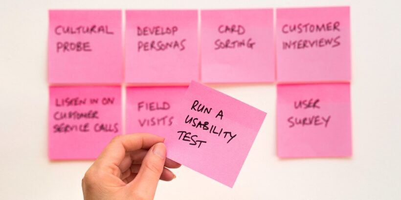

September 19, 2018
Start. Testing. Now!

Hello hello - nice that you got here!
If you read this, I'm pretty sure you care about your work. You want to deliver good quality Software, and of course you also want to test.
If you're like me, you really really want to test, but you just don't know to start. Like - what the...?
There are tons of testing frameworks out there, you're code looks like it could be never, ever tested at all and everytime you ask a question on the web like
"How do I test databases?"
"How can I assure, that my Rest-Service work?"
...
you get put down from the community:
"That's not Unit Testing - that's integration / end2end / ... testing! You're doing it all wrong, blah blah blah..."
But really - you don't care how it's named. I mean, you want to deliver good quality Software, so... whatever, just test it, right? It looks like there is no starting point for "normal" guys and girls out there: Either you get it, or you don't...
Wrong, wrong, wrong!
I absolutely feel you and your thoughts, because I was at the exact same point several times. When I was a total beginner at testing, I felt like:
- Okay, I get this framework, but how can I apply it to my code base?
- I can only test trivial and obviously working things with Unit tests (which slows me down)
- The effort to test is just to high
- Everytime I change my code, I also need to change my tests...
- It's just not worth it!!!1eleven
Now that I'm only a relative beginner (hey, at least I dipped my toe into the water), let me tell you the dark and secret truth, no one was able to reveal to you:
Testing is not about tests. It's about Software Design!
Phew...
And here comes another one:
You're code will become better automatically, if you try to auto-test it!
Wow!
So there's really something else behind this topic, that divides beginners and pros, and now you know what. But how can someone cross this bridge?
Start testing - today!
It's that simple! You just write a test for a trivial little thing. You might even think: This won't ever go wrong, this test is useless! But it doesn't matter. Soon you'll have a hundred of them. And you'll see more and more potential for automated tests in your codebase.
Software testing is a Skill!
And every little thing you read, do and learn about it, gives you a little more experience. Not only about coding, but also about the way you design and implement your Software.
At the beginning, you might test something trivial, or you might even start with writing End 2 End tests. It doesn't matter, because every line of code will expand your horizont, little by little.
Soon you'll see, that you need to restructure your code a bit, so that you can apply a test on it.
- You'll make it less coupled to external dependencies, so that you have the chance to spy/mock/stub/fake some things.
- You care about Dependency injection, Dependency inversion, and about Object Oriented / Domain Driven / functional Design in General
- You might write smaller chunks of codes, so that each class and method has a single responsibility (which is testable)
- You might think of event or message based architectures to decouple your code even more
- You start using more configuration files or parameters, so that you don't even have to code so many changes anymore
- ...
And most important:
You Start thinking about your code, before you write it!
It will be so awesome, because a whole new world opens up for you. You'll re-read all the stuff about design patterns, refactoring and software design and now you see so much more in it. You know how to combine things, move them around and / or reassign them with ease.
You'll feel like you're a code magician! A sort of tibetian monk with supernatural coding powers.
And someday after, it'll just become natural to think this way. You'll have it integrated in your day to day workflow. You write great code, others are stunned about, and don't even think about it.
And then, you try to help the newbies with their testing Requests on the internet...
No, this is not unit testing. You're testing with external dependencies... that's integration testing! Try to avoid overusing that... mind the upside down testing Pyramid! ... ...
Life is strange ¯\_(ツ)_/¯